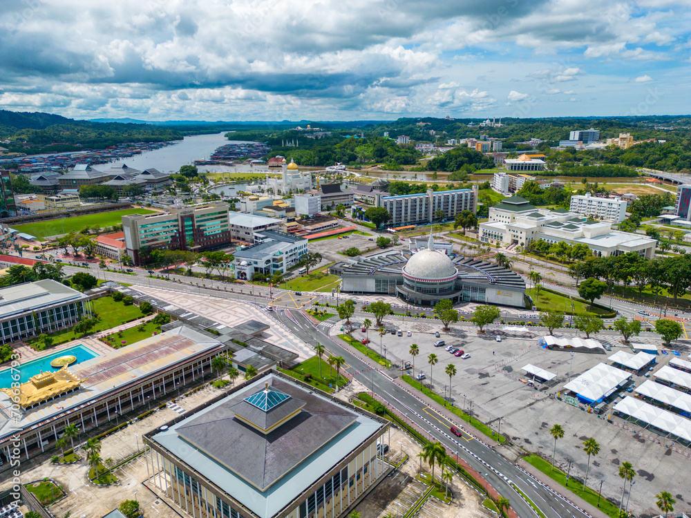
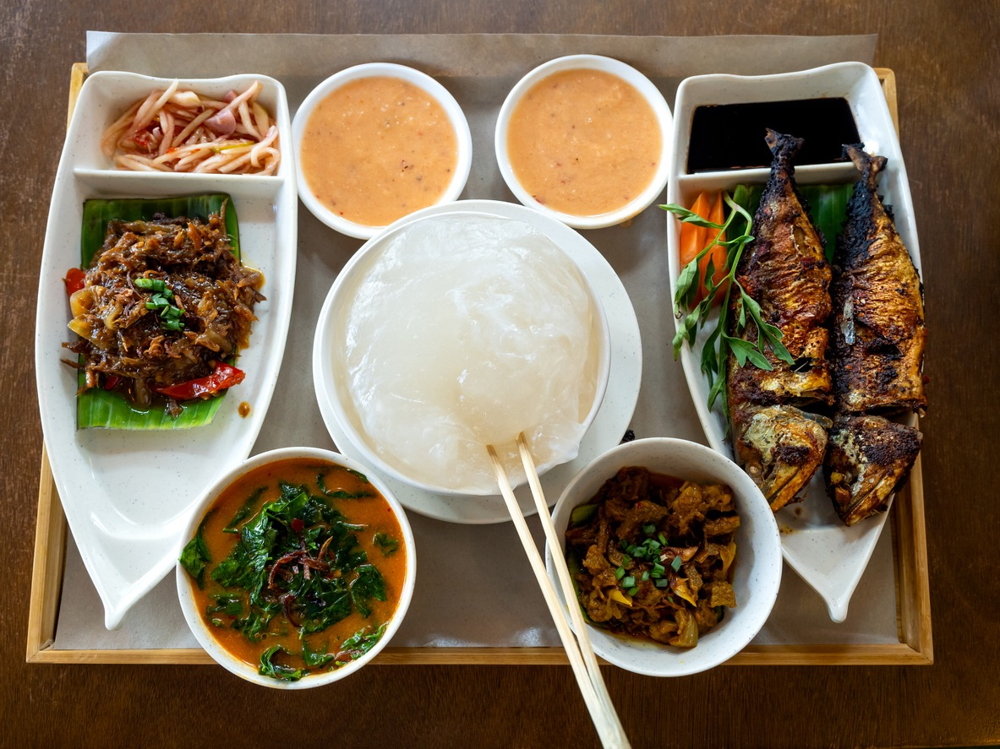
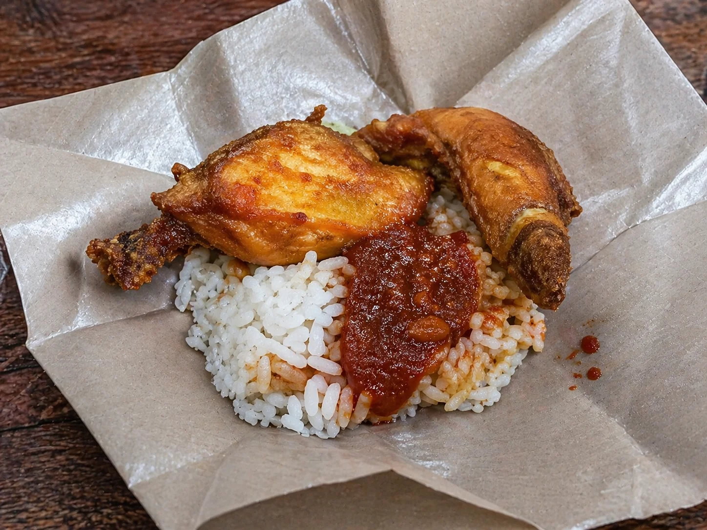
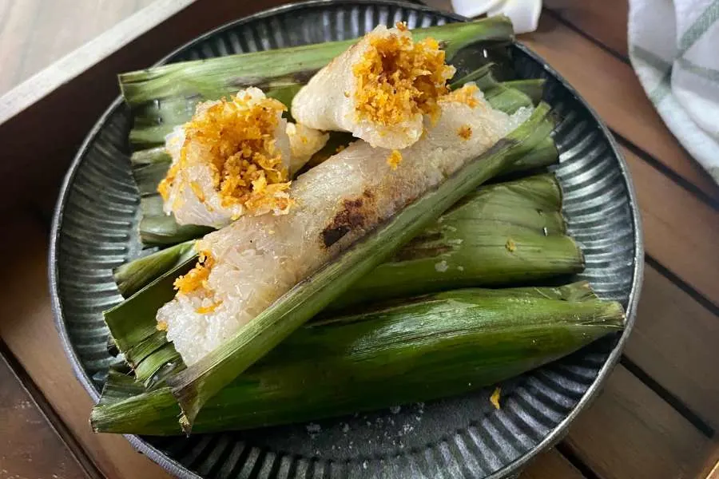
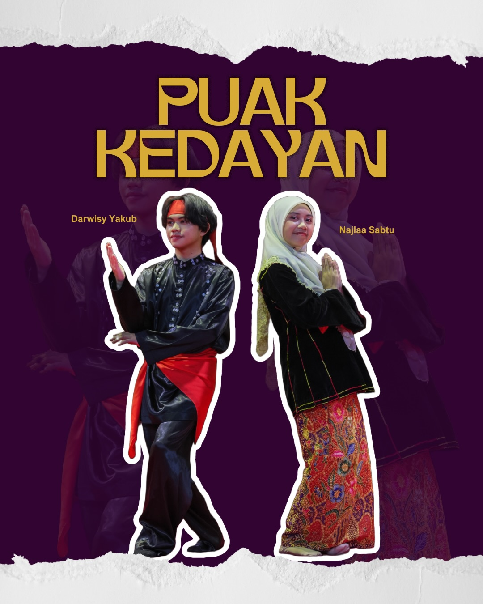
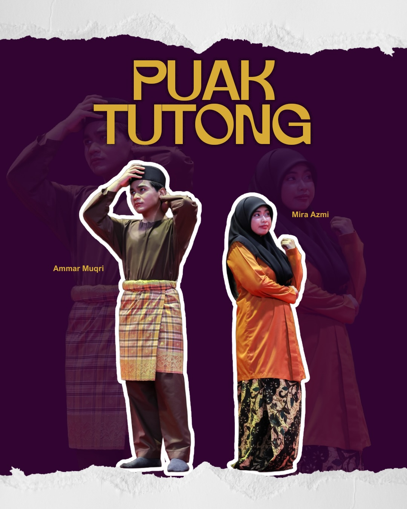
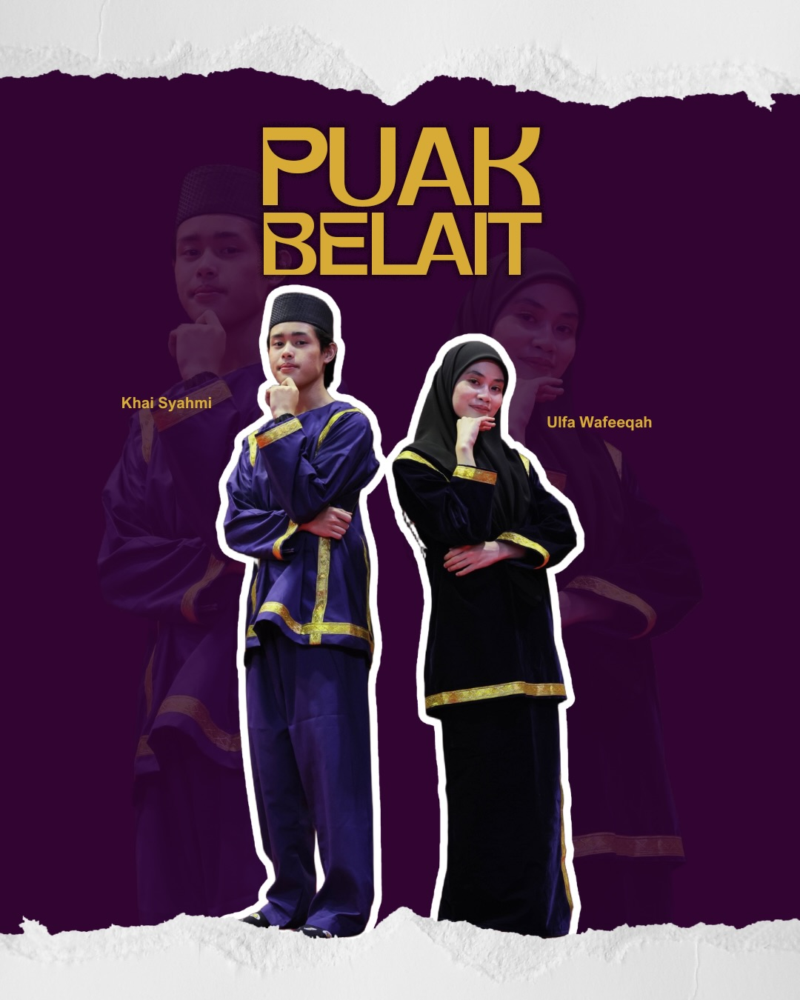
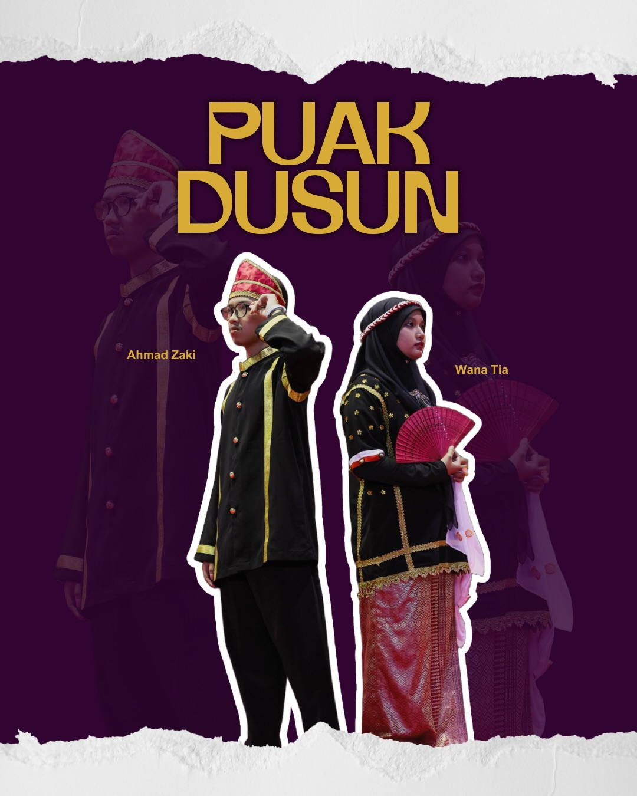
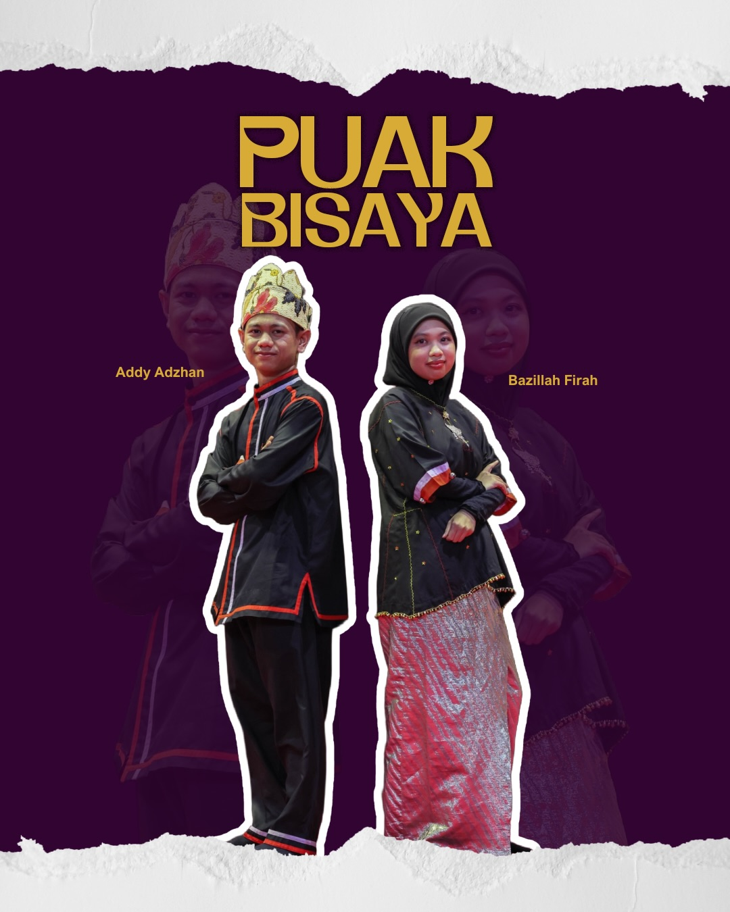
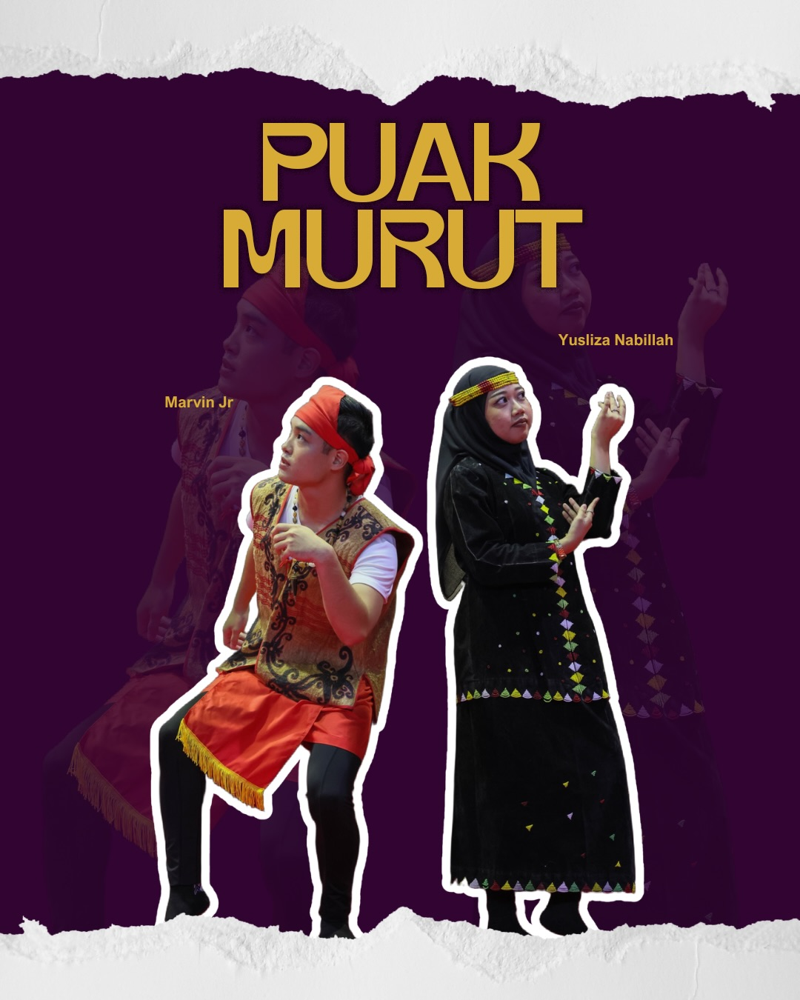

Capital
Bandar Seri Begawan
Discover BruneiA KINGDOM OF WONDERS
OUR STORY
Before Brunei became the peaceful nation we know today, it had quite the story to tell! Once home to a powerful maritime empire, Brunei played an important role in Southeast Asia's history, connecting people, cultures, and trade across the region. Life flourished along the Brunei River, where communities built their homes above the water and created traditions that have stood the test of time. Fast forward to today, and Brunei continues to embrace its royal heritage, cultural roots, and Islamic values while growing alongside the modern world. From centuries-old customs to iconic landmarks, every corner holds a piece of the past. Here, history isn't just something you read about in books; it's something you can see, feel, and experience for yourself.

GET TO KNOW BRUNEI
A few facts to know before your visit
Bandar Seri Begawan
Malay (official)
English widely used
Islam
Brunei Dollar (BND)
EXPLORE THE REGIONS
Select a district to see its attractions.
LOCAL FLAVOURS
Taste some of the dishes that make the local food culture special.

A sago-based staple served with a tangy dipping sauce and side dishes.

A beloved combination of rice, fried chicken and spicy sambal.

Grilled banana-leaf-wrapped glutinous rice with a savoury filling.
OUR CULTURAL HERITAGE
Explore the seven indigenous groups commonly recognised in Brunei:

The largest indigenous community in Brunei! Known for their rich royal heritage, traditional customs, and strong cultural identity, the Melayu Brunei people play an important role in shaping the nation's history and traditions.

With a strong connection to farming and village life, the Kedayan community is known for its agricultural heritage, distinctive language, and traditions passed down through generations.

The Tutong community brings its own unique language, customs, and cultural identity to Brunei. Their traditions reflect generations of history and a strong connection to their roots.

Beyond Belait's modern developments lies a rich cultural history. The Belait community preserves its distinctive language, traditions, and identity, adding to Brunei's cultural diversity.

Deeply connected to nature and traditional farming, the Dusun community has a rich heritage shaped by its surroundings, unique customs, and cultural celebrations.

Rich in culture and traditions, the Bisaya community is known for its agricultural roots, distinctive customs, and strong sense of community that continues through generations.

Known for their vibrant cultural heritage, the Murut community has unique customs, traditional crafts, and a strong connection to the forests and highlands of Borneo.